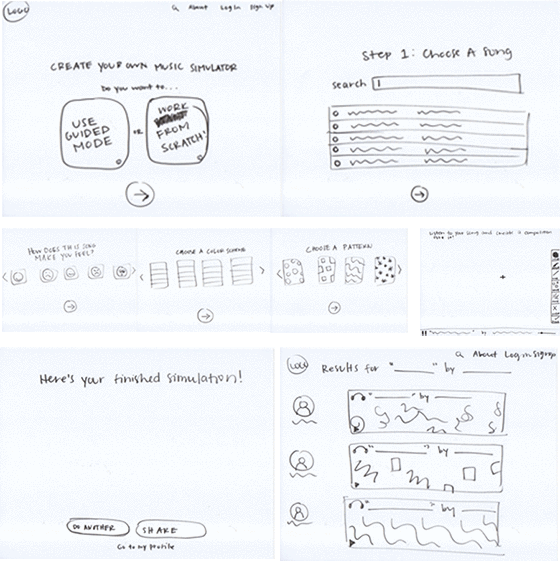

PROJECT 5: STORYBOARDS
It was difficult to include every aspect of my website in such a short period of time, but developing this prototype at such a rapid pace ________. By the time ten minutes had lapsed, I was fully aware that I was missing important information, but it was interesting to discover what information other people considered most important, and I even received feedback on things that I hadn't even considered. I think the main issue with my prototype is that there is a lot of jumping between areas without sufficient context, so it ends up being really confusing because users end up in place on the website that. Also, I didn't provide navigation on each of my pages. I didn't link to an explore page. I didn't even include an area to connect to the wireless device that I'm hoping to incorporate into my project. One thing I'd definitely like to incorporate is ____. Overall, the main thing I gained from this exercise is a more broadened and realistic outlook on how many elements are needed to create an easy-to-website, as well as the importance of user-testing.